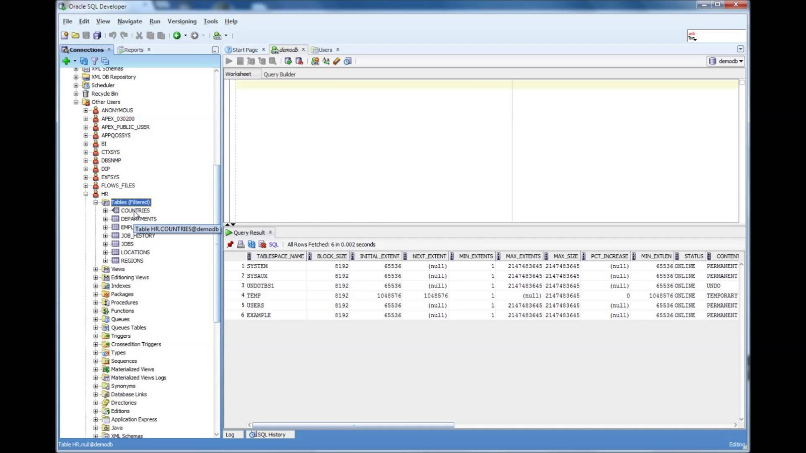

Ngày nay, trong kỷ nguyên của dữ liệu, người ta ví chúng như một nguồn tài nguyên quý không khác gì thang đá, dầu thô. Không những các tập đoàn đa quốc gia hàng đầu mà cả những startup hoặc các công ty già cỗi trong nước cũng bắt đầu đầu tư nhiều hơn vào hạ tầng dữ liệu, người ta tuyển dụng nhiều các vị trí liên quan đến quản lý hạ tầng, xử lý và khai thác dữ liệu nhằm đưa ra những phân tích và ứng dụng có giá trị lớn cho doanh nghiệp. Tuy vậy, khi mà mọi thứ còn rất mới lạ với thị trường việc làm trong nước, việc tuyển dụng và phân định quyền hạn và trách nhiệm đã không thể rõ ràng. Bọn tay mơ như chúng tôi ngày ấy khi đọc một bài đăng tuyển dụng thậm chí còn không phân biệt được nó thuộc thể loại gì cho đến khi đọc chính xác trách nhiệm và kỹ năng yêu cầu trong mô tả công việc. Do đó, trong quyển sách này, tôi muốn nói một chút về nghề data và vai trò của họ trong một dự án
Để mọi người dễ hình dung, tôi có một ví dụ vắn tắt một vài tình huống thực tế trong doanh nghiệp như sau
Ví dụ có một website mạng xã hội tên Facepen. Phía dưới là giao diện cá nhân của tôi trên Facepen với dữ liệu tên, tuổi, email và ảnh đại diện của tôi:
Data engineer sẽ là người xây dựng đường dẫn truyền dữ liệu (pipeline) để truyền dữ liệu từ website này lên Data Lake nơi có thể chứa tất cả các loại dữ liệu không có cấu trúc, bao gồm ảnh đại diện của tôi. Sau đó, từ Data lake anh ấy sẽ xử lý dữ liệu để thanh lọc chỉ còn dữ liệu được cấu trúc (Structured) đưa lên Data Warehouse (DWH). Toàn bộ quá trình này người ta gọi đây là ETL. Trong quá trình ETL, tùy thuộc vào môi trường mà doanh nghiệp lựa chọn, anh ấy có thể sử dụng SQL, Python, Java,… (các ngôn ngữ này sẽ được nói chi tiết hơn ở các chương sau)
Sau đó, Business Intelligence sử dụng các bảng dữ liệu này để vẽ dashboard trên Excel hoặc Power BI cho các cấp lãnh đạo hoặc khách hàng theo dõi số liệu một cách thường xuyên.

Mọi chuyện rất suôn sẻ cho đến khi xuất hiện một requirement đến từ Product Owner. Chị ấy yêu cầu phải có thêm trường dữ liệu số điện thoại khách hàng để tăng tính bảo mật cho trang cá nhân của họ. Vậy là phát sinh công việc mới.
Data Analyst sẽ là người tham gia vào để xác định liệu giao diện màn hình nào, bảng dữ liệu nào sẽ bị ảnh hưởng trong dự án lần này. Đội Software Engineer xây dựng một trường dữ liệu nhận thông tin số điện thoại khách hàng trên website còn Data engineer lại được bỏ vào giỏ hàng cho việc đảm bảo số điện thoại được kéo từ Website về Server.
Tuy vậy, đó mới chỉ là trách nhiệm và công việc của các chức danh trong một tình huống nhất định. Do đó, ở phần sau, chúng ta sẽ cùng phân tích chi tiết về từng chức danh.
1.1 Business Intelligence
Ở Việt Nam, bạn có thể tìm thấy Business Intelligence dưới các chức danh khác nhau tại các tên tuổi lớn trong và ngoài nước như Unilever, Nestle, P&G, Vingroup, FPT, Viettel, Masan, Unilever, Nestlé, Procter & Gamble, Vinamilk,… Đối với nhóm ngành tài chính, những cái tên mới nổi như Momo, Fe Credit, MCredit,… thậm chí ở những ngân hàng già cỗi trong nước như BIDV, Techcombank, VPBank,… tôi còn thấy nhân sự đã quá quen với việc xuất dữ liệu trực tiếp từ hệ thống đặc biệt là những người làm phân tích.
Tùy vào cơ cấu và loại hình doanh nghiệp, các chức danh tương tự có thể là Business Intelligence còn có thể là Reporting analyst, Financial Analyst,… ở cấp độ cao hơn nó có thể là Head of reporting, Head of Business Intelligence,...
Vai trò và trách nhiệm
Ngôn ngữ và môi trường dữ liệu
Kỹ năng cần có và cái khó của nghề
Như ví dụ phía trên, bạn có thể thấy so với các nghề khác trong cùng lĩnh vực dữ liệu, Business Intelligence tương tác rất nhiều với các phòng ban nghiệp vụ khác nhau. Do đó, vai trò BI không chỉ đòi hỏi về khả năng về công nghệ như sử dụng các công cụ BI, sự hiểu biết về luồng dữ liệu mà còn đòi hỏi rất nhiều vào kỹ năng mềm như thuyết trình, giao tiếp và khả năng “thao túng” đối tác (stackholder) trong các phòng ban.
Một số tình huống khó mà BI thể gặp phải trong công việc như hiểu đúng yêu cầu được đưa ra trước đó và sự thiếu hợp tác từ các stackholder. Thông thường những tình huống này có thể được xử lý một cách mượt mà hơn nếu như BI có kỹ năng mềm tốt, một kiến thức về domain vững chắc hoặc kinh nghiệm trước đó đã từng trải qua.
1.2 Data Analyst
1.3 Data Engineer